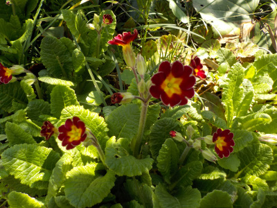

遊びで植物を育てよう
庭で多年草化しているプリムラは元気な感じがして好きです。
更新日 : 2024/07/08
2024/04/13
以前から庭にあるプリムラが咲きました。

鉢植えとは違った魅力がありますね。
どちらかというと、こっちが好きかな。
TOP > 花 > プリムラ
2024/04/13
畑の脇にプリムラがありました。

種が飛んだんでしょう。勝手に育つくらい丈夫な植物なんでしょうね。
TOP > 花 > プリムラ
プリムラの記事をまとめたものはこちら
【おいしいものを食べよう。】【しっかり寝よう。】
【ソロ活をしよう!】【季節感のあることをしよう。】【動画視聴はほどほどに。】【当サイトの全てのコンテンツは無断転載禁止です。】